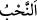
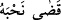

kararlığını teyid için adakta bulunursa, böyle bir adağın güzelliğine söylenecek bir söz
yoktur. Allâh’ın has kullarının adaklarına gelince, onların adakları kalblerine düşen ve
gönüllerinin söz verdiği şeydir. Dil ile verilen söz ancak gönül ile verilen sözü
tamamlamak içindir. Dil ile yapılan sözleşmenin yerine getirilmesi gerekli olduğu gibi
gönül ile yapılan sözleşmenin de yerine getirilmesi gereklidir. Bu böyle korunup
muhâfaza edilsin. Çünkü bu, ehlullah nezdinde muhâfaza olunan takvâ babındandır.
Saf gönüllü sudan sadâkat yolunu öğren,
Ağaç ve çimen gibi tam bir özgürlüğü talep et.
Vefâkâr olalım, eleştiriye uğrayalım, mutlu olalım,
Çünkü bizim yolumuzda incitmek kâfirliktir.
“İşte onlardan kimi sözünü yerine getirip o yolda canını vermiştir”
“
” vâcib olduğuna hükmedilen adaktır. Bu da kişinin bir ameli üstlenip kendisine
vâcib kılmasıdır. Adağın yerine getirilmesi ise onu yapıp tamamlamak ve tam olarak
yerine getirmektir. Ölen kişi için de “
” tâbiri kullanılır. “Ecelini tamamladı,
yiyeceğini bitirdi ve dünyâdan hacetini gördü” denilir. Çünkü ölüm her canlının
boynuna lazım olan bir adak gibidir.
Burada sâdıkların durumu açıklanmakta ve onlar iki kısma ayrılmaktadır. Yâni Hz.
Hamza, Mus‘ab b. Umeyr ve Enes b. Mâlik (r.a.)’ın amcası Enes b. Nadr el-Hazrecî el-
Ensârî gibi onlardan bazıları, şehid olana kadar savaşmak suretiyle bu adağın
sorumluluğunu yerine getirdi.
Rivâyete göre Enes b. Nadr, Bedir savaşında bulunamadı. Uhud savaşına katıldı.
(Yaşanan kargaşadan sonra) İblîs: “Haberiniz olsun, Muhammed öldürüldü!” diye
bağırınca, Enes (r.a.) Ömer (r.a.) ile beraberinde bulunan bir grup sahâbînin yanına
uğradı. Onlara: “Ne oturuyorsunuz?” diye sordu. Onlar da: “Rasûlullah (s.a.)
öldürüldü.” dediler. Enes (s.a.) “O’ndan sonra siz yaşayıp da ne yapacaksınız? Kalkın
ve onun öldüğü şekilde/yolda siz de ölün!” dedi. Sonra kılıcını çekip müşrik ordusunun
içine daldı. Daha sonra şehidler arasında bulundu. Üzerinde seksen küsur yara vardı.
Aşk kılıcının yarası olmadan bu âlemden gitmem,
Savaş meydanından yarasız gitmek bizim için utançtır.
Osman, Talha ve diğerleri gibi “kimi de” onlardan bazısı da vakti belirlenmiş olduğu
için adağını yerine getirmeyi “beklemektedir.” Çünkü onlar adaklarında devam
etmektedirler. Bir kısmını yerine getirdiler ki o Rasûlullah (s.a.) ile birlikte sebat etmek
ve âyet-i kerîmenin ineceği zamana kadar savaşmaktı. Onlar sözlerinin kalanını da
yerine getirmeyi beklemektedir ki o da şehid düşünceye kadar savaşmaktır.
Onların beklemekle vasfedilmesi, şehid olmaya son derece iştiyaklı olduklarına
işârettir.